fcn_utils package¶
Submodules¶
fcn_utils.BilinearUpSampling module¶
-
class
fcn_utils.BilinearUpSampling.BilinearUpSampling2D(size=(1, 1), target_size=None, data_format='default', **kwargs)[source]¶ Bases:
keras.engine.topology.Layer
-
fcn_utils.BilinearUpSampling.resize_images_bilinear(X, height_factor=1, width_factor=1, target_height=None, target_width=None, data_format='default')[source]¶ Resizes the images contained in a 4D tensor of shape - [batch, channels, height, width] (for ‘channels_first’ data_format) - [batch, height, width, channels] (for ‘channels_last’ data_format) by a factor of (height_factor, width_factor). Both factors should be positive integers.
fcn_utils.SegDataGenerator module¶
-
class
fcn_utils.SegDataGenerator.SegDataGenerator(featurewise_center=False, samplewise_center=False, featurewise_std_normalization=False, samplewise_std_normalization=False, channelwise_center=False, rotation_range=0.0, width_shift_range=0.0, height_shift_range=0.0, shear_range=0.0, zoom_range=0.0, zoom_maintain_shape=True, channel_shift_range=0.0, fill_mode='constant', cval=0.0, label_cval=255, crop_mode='none', crop_size=(0, 0), pad_size=None, horizontal_flip=False, vertical_flip=False, rescale=None, data_format='default')[source]¶ Bases:
object-
fit(X, augment=False, rounds=1, seed=None)[source]¶ Required for featurewise_center and featurewise_std_normalization
- # Arguments
X: Numpy array, the data to fit on. augment: whether to fit on randomly augmented samples rounds: if augment,
how many augmentation passes to do over the dataseed: random seed.
-
-
class
fcn_utils.SegDataGenerator.SegDirectoryIterator(file_path, seg_data_generator, data_dir, data_suffix, label_dir, label_suffix, classes, ignore_label=255, crop_mode='none', label_cval=255, pad_size=None, target_size=None, color_mode='rgb', data_format='default', class_mode='sparse', batch_size=1, shuffle=True, seed=None, save_to_dir=None, save_prefix='', save_format='jpeg', loss_shape=None, mapping=None)[source]¶ Bases:
keras.preprocessing.image.IteratorUsers need to ensure that all files exist. Label images should be png images where pixel values represents class number.
find images -name *.jpg > images.txt find labels -name *.png > labels.txt
for a file name 2011_002920.jpg, each row should contain 2011_002920
- file_path: location of train.txt, or val.txt in PASCAL VOC2012 format,
- listing image file path components without extension
data_dir: location of image files referred to by file in file_path label_dir: location of label files data_suffix: image file extension, such as .jpg or .png label_suffix: label file suffix, such as .png, or .npy loss_shape: shape to use when applying loss function to the label data
fcn_utils.activations module¶
fcn_utils.callbacks module¶
fcn_utils.evaluation module¶
-
fcn_utils.evaluation.beta(a, b, size=None)¶ Draw samples from a Beta distribution.
The Beta distribution is a special case of the Dirichlet distribution, and is related to the Gamma distribution. It has the probability distribution function
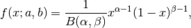
where the normalisation, B, is the beta function,
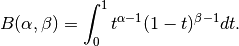
It is often seen in Bayesian inference and order statistics.
Parameters: - a (float or array_like of floats) – Alpha, non-negative.
- b (float or array_like of floats) – Beta, non-negative.
- size (int or tuple of ints, optional) – Output shape. If the given shape is, e.g.,
(m, n, k), thenm * n * ksamples are drawn. If size isNone(default), a single value is returned ifaandbare both scalars. Otherwise,np.broadcast(a, b).sizesamples are drawn.
Returns: out – Drawn samples from the parameterized beta distribution.
Return type: ndarray or scalar
-
fcn_utils.evaluation.binomial(n, p, size=None)¶ Draw samples from a binomial distribution.
Samples are drawn from a binomial distribution with specified parameters, n trials and p probability of success where n an integer >= 0 and p is in the interval [0,1]. (n may be input as a float, but it is truncated to an integer in use)
Parameters: - n (int or array_like of ints) – Parameter of the distribution, >= 0. Floats are also accepted, but they will be truncated to integers.
- p (float or array_like of floats) – Parameter of the distribution, >= 0 and <=1.
- size (int or tuple of ints, optional) – Output shape. If the given shape is, e.g.,
(m, n, k), thenm * n * ksamples are drawn. If size isNone(default), a single value is returned ifnandpare both scalars. Otherwise,np.broadcast(n, p).sizesamples are drawn.
Returns: out – Drawn samples from the parameterized binomial distribution, where each sample is equal to the number of successes over the n trials.
Return type: ndarray or scalar
See also
scipy.stats.binom()- probability density function, distribution or cumulative density function, etc.
Notes
The probability density for the binomial distribution is
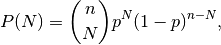
where
 is the number of trials,
is the number of trials,  is the probability
of success, and
is the probability
of success, and  is the number of successes.
is the number of successes.When estimating the standard error of a proportion in a population by using a random sample, the normal distribution works well unless the product p*n <=5, where p = population proportion estimate, and n = number of samples, in which case the binomial distribution is used instead. For example, a sample of 15 people shows 4 who are left handed, and 11 who are right handed. Then p = 4/15 = 27%. 0.27*15 = 4, so the binomial distribution should be used in this case.
References
[1] Dalgaard, Peter, “Introductory Statistics with R”, Springer-Verlag, 2002. [2] Glantz, Stanton A. “Primer of Biostatistics.”, McGraw-Hill, Fifth Edition, 2002. [3] Lentner, Marvin, “Elementary Applied Statistics”, Bogden and Quigley, 1972. [4] Weisstein, Eric W. “Binomial Distribution.” From MathWorld–A Wolfram Web Resource. http://mathworld.wolfram.com/BinomialDistribution.html [5] Wikipedia, “Binomial distribution”, http://en.wikipedia.org/wiki/Binomial_distribution Examples
Draw samples from the distribution:
>>> n, p = 10, .5 # number of trials, probability of each trial >>> s = np.random.binomial(n, p, 1000) # result of flipping a coin 10 times, tested 1000 times.
A real world example. A company drills 9 wild-cat oil exploration wells, each with an estimated probability of success of 0.1. All nine wells fail. What is the probability of that happening?
Let’s do 20,000 trials of the model, and count the number that generate zero positive results.
>>> sum(np.random.binomial(9, 0.1, 20000) == 0)/20000. # answer = 0.38885, or 38%.
-
fcn_utils.evaluation.chisquare(df, size=None)¶ Draw samples from a chi-square distribution.
When df independent random variables, each with standard normal distributions (mean 0, variance 1), are squared and summed, the resulting distribution is chi-square (see Notes). This distribution is often used in hypothesis testing.
Parameters: - df (int or array_like of ints) – Number of degrees of freedom.
- size (int or tuple of ints, optional) – Output shape. If the given shape is, e.g.,
(m, n, k), thenm * n * ksamples are drawn. If size isNone(default), a single value is returned ifdfis a scalar. Otherwise,np.array(df).sizesamples are drawn.
Returns: out – Drawn samples from the parameterized chi-square distribution.
Return type: ndarray or scalar
Raises: ValueError– When df <= 0 or when an inappropriate size (e.g.size=-1) is given.Notes
The variable obtained by summing the squares of df independent, standard normally distributed random variables:
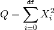
is chi-square distributed, denoted
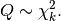
The probability density function of the chi-squared distribution is
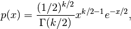
where
 is the gamma function,
is the gamma function,
References
[1] NIST “Engineering Statistics Handbook” http://www.itl.nist.gov/div898/handbook/eda/section3/eda3666.htm Examples
>>> np.random.chisquare(2,4) array([ 1.89920014, 9.00867716, 3.13710533, 5.62318272])
-
fcn_utils.evaluation.choice(a, size=None, replace=True, p=None)¶ Generates a random sample from a given 1-D array
New in version 1.7.0.
Parameters: - a (1-D array-like or int) – If an ndarray, a random sample is generated from its elements. If an int, the random sample is generated as if a were np.arange(a)
- size (int or tuple of ints, optional) – Output shape. If the given shape is, e.g.,
(m, n, k), thenm * n * ksamples are drawn. Default is None, in which case a single value is returned. - replace (boolean, optional) – Whether the sample is with or without replacement
- p (1-D array-like, optional) – The probabilities associated with each entry in a. If not given the sample assumes a uniform distribution over all entries in a.
Returns: samples – The generated random samples
Return type: single item or ndarray
Raises: ValueError– If a is an int and less than zero, if a or p are not 1-dimensional, if a is an array-like of size 0, if p is not a vector of probabilities, if a and p have different lengths, or if replace=False and the sample size is greater than the population sizeSee also
Examples
Generate a uniform random sample from np.arange(5) of size 3:
>>> np.random.choice(5, 3) array([0, 3, 4]) >>> #This is equivalent to np.random.randint(0,5,3)
Generate a non-uniform random sample from np.arange(5) of size 3:
>>> np.random.choice(5, 3, p=[0.1, 0, 0.3, 0.6, 0]) array([3, 3, 0])
Generate a uniform random sample from np.arange(5) of size 3 without replacement:
>>> np.random.choice(5, 3, replace=False) array([3,1,0]) >>> #This is equivalent to np.random.permutation(np.arange(5))[:3]
Generate a non-uniform random sample from np.arange(5) of size 3 without replacement:
>>> np.random.choice(5, 3, replace=False, p=[0.1, 0, 0.3, 0.6, 0]) array([2, 3, 0])
Any of the above can be repeated with an arbitrary array-like instead of just integers. For instance:
>>> aa_milne_arr = ['pooh', 'rabbit', 'piglet', 'Christopher'] >>> np.random.choice(aa_milne_arr, 5, p=[0.5, 0.1, 0.1, 0.3]) array(['pooh', 'pooh', 'pooh', 'Christopher', 'piglet'], dtype='|S11')
-
fcn_utils.evaluation.dirichlet(alpha, size=None)¶ Draw samples from the Dirichlet distribution.
Draw size samples of dimension k from a Dirichlet distribution. A Dirichlet-distributed random variable can be seen as a multivariate generalization of a Beta distribution. Dirichlet pdf is the conjugate prior of a multinomial in Bayesian inference.
Parameters: - alpha (array) – Parameter of the distribution (k dimension for sample of dimension k).
- size (int or tuple of ints, optional) – Output shape. If the given shape is, e.g.,
(m, n, k), thenm * n * ksamples are drawn. Default is None, in which case a single value is returned.
Returns: samples – The drawn samples, of shape (size, alpha.ndim).
Return type: ndarray,
Notes
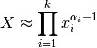
Uses the following property for computation: for each dimension, draw a random sample y_i from a standard gamma generator of shape alpha_i, then 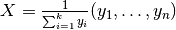 is Dirichlet distributed.
References
[1] David McKay, “Information Theory, Inference and Learning Algorithms,” chapter 23, http://www.inference.phy.cam.ac.uk/mackay/ [2] Wikipedia, “Dirichlet distribution”, http://en.wikipedia.org/wiki/Dirichlet_distribution Examples
Taking an example cited in Wikipedia, this distribution can be used if one wanted to cut strings (each of initial length 1.0) into K pieces with different lengths, where each piece had, on average, a designated average length, but allowing some variation in the relative sizes of the pieces.
>>> s = np.random.dirichlet((10, 5, 3), 20).transpose()
>>> plt.barh(range(20), s[0]) >>> plt.barh(range(20), s[1], left=s[0], color='g') >>> plt.barh(range(20), s[2], left=s[0]+s[1], color='r') >>> plt.title("Lengths of Strings")
-
fcn_utils.evaluation.exponential(scale=1.0, size=None)¶ Draw samples from an exponential distribution.
Its probability density function is
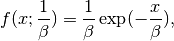
for
x > 0and 0 elsewhere. is the scale parameter,
which is the inverse of the rate parameter 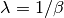.
The rate parameter is an alternative, widely used parameterization
of the exponential distribution [3]_.
is the scale parameter,
which is the inverse of the rate parameter 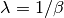.
The rate parameter is an alternative, widely used parameterization
of the exponential distribution [3]_.The exponential distribution is a continuous analogue of the geometric distribution. It describes many common situations, such as the size of raindrops measured over many rainstorms [1]_, or the time between page requests to Wikipedia [2]_.
Parameters: - scale (float or array_like of floats) – The scale parameter, 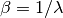.
- size (int or tuple of ints, optional) – Output shape. If the given shape is, e.g.,
(m, n, k), thenm * n * ksamples are drawn. If size isNone(default), a single value is returned ifscaleis a scalar. Otherwise,np.array(scale).sizesamples are drawn.
Returns: out – Drawn samples from the parameterized exponential distribution.
Return type: ndarray or scalar
References
[1] Peyton Z. Peebles Jr., “Probability, Random Variables and Random Signal Principles”, 4th ed, 2001, p. 57. [2] Wikipedia, “Poisson process”, http://en.wikipedia.org/wiki/Poisson_process [3] Wikipedia, “Exponential distribution”, http://en.wikipedia.org/wiki/Exponential_distribution
-
fcn_utils.evaluation.f(dfnum, dfden, size=None)¶ Draw samples from an F distribution.
Samples are drawn from an F distribution with specified parameters, dfnum (degrees of freedom in numerator) and dfden (degrees of freedom in denominator), where both parameters should be greater than zero.
The random variate of the F distribution (also known as the Fisher distribution) is a continuous probability distribution that arises in ANOVA tests, and is the ratio of two chi-square variates.
Parameters: - dfnum (int or array_like of ints) – Degrees of freedom in numerator. Should be greater than zero.
- dfden (int or array_like of ints) – Degrees of freedom in denominator. Should be greater than zero.
- size (int or tuple of ints, optional) – Output shape. If the given shape is, e.g.,
(m, n, k), thenm * n * ksamples are drawn. If size isNone(default), a single value is returned ifdfnumanddfdenare both scalars. Otherwise,np.broadcast(dfnum, dfden).sizesamples are drawn.
Returns: out – Drawn samples from the parameterized Fisher distribution.
Return type: ndarray or scalar
See also
scipy.stats.f()- probability density function, distribution or cumulative density function, etc.
Notes
The F statistic is used to compare in-group variances to between-group variances. Calculating the distribution depends on the sampling, and so it is a function of the respective degrees of freedom in the problem. The variable dfnum is the number of samples minus one, the between-groups degrees of freedom, while dfden is the within-groups degrees of freedom, the sum of the number of samples in each group minus the number of groups.
References
[1] Glantz, Stanton A. “Primer of Biostatistics.”, McGraw-Hill, Fifth Edition, 2002. [2] Wikipedia, “F-distribution”, http://en.wikipedia.org/wiki/F-distribution Examples
An example from Glantz[1], pp 47-40:
Two groups, children of diabetics (25 people) and children from people without diabetes (25 controls). Fasting blood glucose was measured, case group had a mean value of 86.1, controls had a mean value of 82.2. Standard deviations were 2.09 and 2.49 respectively. Are these data consistent with the null hypothesis that the parents diabetic status does not affect their children’s blood glucose levels? Calculating the F statistic from the data gives a value of 36.01.
Draw samples from the distribution:
>>> dfnum = 1. # between group degrees of freedom >>> dfden = 48. # within groups degrees of freedom >>> s = np.random.f(dfnum, dfden, 1000)
The lower bound for the top 1% of the samples is :
>>> sort(s)[-10] 7.61988120985
So there is about a 1% chance that the F statistic will exceed 7.62, the measured value is 36, so the null hypothesis is rejected at the 1% level.
-
fcn_utils.evaluation.gamma(shape, scale=1.0, size=None)¶ Draw samples from a Gamma distribution.
Samples are drawn from a Gamma distribution with specified parameters, shape (sometimes designated “k”) and scale (sometimes designated “theta”), where both parameters are > 0.
Parameters: - shape (float or array_like of floats) – The shape of the gamma distribution. Should be greater than zero.
- scale (float or array_like of floats, optional) – The scale of the gamma distribution. Should be greater than zero. Default is equal to 1.
- size (int or tuple of ints, optional) – Output shape. If the given shape is, e.g.,
(m, n, k), thenm * n * ksamples are drawn. If size isNone(default), a single value is returned ifshapeandscaleare both scalars. Otherwise,np.broadcast(shape, scale).sizesamples are drawn.
Returns: out – Drawn samples from the parameterized gamma distribution.
Return type: ndarray or scalar
See also
scipy.stats.gamma()- probability density function, distribution or cumulative density function, etc.
Notes
The probability density for the Gamma distribution is
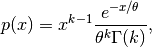
where
 is the shape and
is the shape and  the scale,
and is the Gamma function.
the scale,
and is the Gamma function.The Gamma distribution is often used to model the times to failure of electronic components, and arises naturally in processes for which the waiting times between Poisson distributed events are relevant.
References
[1] Weisstein, Eric W. “Gamma Distribution.” From MathWorld–A Wolfram Web Resource. http://mathworld.wolfram.com/GammaDistribution.html [2] Wikipedia, “Gamma distribution”, http://en.wikipedia.org/wiki/Gamma_distribution Examples
Draw samples from the distribution:
>>> shape, scale = 2., 2. # mean=4, std=2*sqrt(2) >>> s = np.random.gamma(shape, scale, 1000)
Display the histogram of the samples, along with the probability density function:
>>> import matplotlib.pyplot as plt >>> import scipy.special as sps >>> count, bins, ignored = plt.hist(s, 50, normed=True) >>> y = bins**(shape-1)*(np.exp(-bins/scale) / ... (sps.gamma(shape)*scale**shape)) >>> plt.plot(bins, y, linewidth=2, color='r') >>> plt.show()
-
fcn_utils.evaluation.geometric(p, size=None)¶ Draw samples from the geometric distribution.
Bernoulli trials are experiments with one of two outcomes: success or failure (an example of such an experiment is flipping a coin). The geometric distribution models the number of trials that must be run in order to achieve success. It is therefore supported on the positive integers,
k = 1, 2, ....The probability mass function of the geometric distribution is
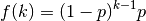
where p is the probability of success of an individual trial.
Parameters: - p (float or array_like of floats) – The probability of success of an individual trial.
- size (int or tuple of ints, optional) – Output shape. If the given shape is, e.g.,
(m, n, k), thenm * n * ksamples are drawn. If size isNone(default), a single value is returned ifpis a scalar. Otherwise,np.array(p).sizesamples are drawn.
Returns: out – Drawn samples from the parameterized geometric distribution.
Return type: ndarray or scalar
Examples
Draw ten thousand values from the geometric distribution, with the probability of an individual success equal to 0.35:
>>> z = np.random.geometric(p=0.35, size=10000)
How many trials succeeded after a single run?
>>> (z == 1).sum() / 10000. 0.34889999999999999 #random
-
fcn_utils.evaluation.get_state()¶ Return a tuple representing the internal state of the generator.
For more details, see set_state.
Returns: out – The returned tuple has the following items: - the string ‘MT19937’.
- a 1-D array of 624 unsigned integer keys.
- an integer
pos. - an integer
has_gauss. - a float
cached_gaussian.
Return type: tuple(str, ndarray of 624 uints, int, int, float) See also
Notes
set_state and get_state are not needed to work with any of the random distributions in NumPy. If the internal state is manually altered, the user should know exactly what he/she is doing.
-
fcn_utils.evaluation.gumbel(loc=0.0, scale=1.0, size=None)¶ Draw samples from a Gumbel distribution.
Draw samples from a Gumbel distribution with specified location and scale. For more information on the Gumbel distribution, see Notes and References below.
Parameters: - loc (float or array_like of floats, optional) – The location of the mode of the distribution. Default is 0.
- scale (float or array_like of floats, optional) – The scale parameter of the distribution. Default is 1.
- size (int or tuple of ints, optional) – Output shape. If the given shape is, e.g.,
(m, n, k), thenm * n * ksamples are drawn. If size isNone(default), a single value is returned iflocandscaleare both scalars. Otherwise,np.broadcast(loc, scale).sizesamples are drawn.
Returns: out – Drawn samples from the parameterized Gumbel distribution.
Return type: ndarray or scalar
See also
scipy.stats.gumbel_l(),scipy.stats.gumbel_r(),scipy.stats.genextreme(),weibull()Notes
The Gumbel (or Smallest Extreme Value (SEV) or the Smallest Extreme Value Type I) distribution is one of a class of Generalized Extreme Value (GEV) distributions used in modeling extreme value problems. The Gumbel is a special case of the Extreme Value Type I distribution for maximums from distributions with “exponential-like” tails.
The probability density for the Gumbel distribution is
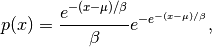
where
 is the mode, a location parameter, and
is the scale parameter.
is the mode, a location parameter, and
is the scale parameter.The Gumbel (named for German mathematician Emil Julius Gumbel) was used very early in the hydrology literature, for modeling the occurrence of flood events. It is also used for modeling maximum wind speed and rainfall rates. It is a “fat-tailed” distribution - the probability of an event in the tail of the distribution is larger than if one used a Gaussian, hence the surprisingly frequent occurrence of 100-year floods. Floods were initially modeled as a Gaussian process, which underestimated the frequency of extreme events.
It is one of a class of extreme value distributions, the Generalized Extreme Value (GEV) distributions, which also includes the Weibull and Frechet.
The function has a mean of 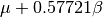 and a variance of
 .
.References
[1] Gumbel, E. J., “Statistics of Extremes,” New York: Columbia University Press, 1958. [2] Reiss, R.-D. and Thomas, M., “Statistical Analysis of Extreme Values from Insurance, Finance, Hydrology and Other Fields,” Basel: Birkhauser Verlag, 2001. Examples
Draw samples from the distribution:
>>> mu, beta = 0, 0.1 # location and scale >>> s = np.random.gumbel(mu, beta, 1000)
Display the histogram of the samples, along with the probability density function:
>>> import matplotlib.pyplot as plt >>> count, bins, ignored = plt.hist(s, 30, normed=True) >>> plt.plot(bins, (1/beta)*np.exp(-(bins - mu)/beta) ... * np.exp( -np.exp( -(bins - mu) /beta) ), ... linewidth=2, color='r') >>> plt.show()
Show how an extreme value distribution can arise from a Gaussian process and compare to a Gaussian:
>>> means = [] >>> maxima = [] >>> for i in range(0,1000) : ... a = np.random.normal(mu, beta, 1000) ... means.append(a.mean()) ... maxima.append(a.max()) >>> count, bins, ignored = plt.hist(maxima, 30, normed=True) >>> beta = np.std(maxima) * np.sqrt(6) / np.pi >>> mu = np.mean(maxima) - 0.57721*beta >>> plt.plot(bins, (1/beta)*np.exp(-(bins - mu)/beta) ... * np.exp(-np.exp(-(bins - mu)/beta)), ... linewidth=2, color='r') >>> plt.plot(bins, 1/(beta * np.sqrt(2 * np.pi)) ... * np.exp(-(bins - mu)**2 / (2 * beta**2)), ... linewidth=2, color='g') >>> plt.show()
-
fcn_utils.evaluation.hypergeometric(ngood, nbad, nsample, size=None)¶ Draw samples from a Hypergeometric distribution.
Samples are drawn from a hypergeometric distribution with specified parameters, ngood (ways to make a good selection), nbad (ways to make a bad selection), and nsample = number of items sampled, which is less than or equal to the sum ngood + nbad.
Parameters: - ngood (int or array_like of ints) – Number of ways to make a good selection. Must be nonnegative.
- nbad (int or array_like of ints) – Number of ways to make a bad selection. Must be nonnegative.
- nsample (int or array_like of ints) – Number of items sampled. Must be at least 1 and at most
ngood + nbad. - size (int or tuple of ints, optional) – Output shape. If the given shape is, e.g.,
(m, n, k), thenm * n * ksamples are drawn. If size isNone(default), a single value is returned ifngood,nbad, andnsampleare all scalars. Otherwise,np.broadcast(ngood, nbad, nsample).sizesamples are drawn.
Returns: out – Drawn samples from the parameterized hypergeometric distribution.
Return type: ndarray or scalar
See also
scipy.stats.hypergeom()- probability density function, distribution or cumulative density function, etc.
Notes
The probability density for the Hypergeometric distribution is
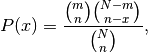
where 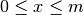 and 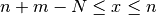
for P(x) the probability of x successes, n = ngood, m = nbad, and N = number of samples.
Consider an urn with black and white marbles in it, ngood of them black and nbad are white. If you draw nsample balls without replacement, then the hypergeometric distribution describes the distribution of black balls in the drawn sample.
Note that this distribution is very similar to the binomial distribution, except that in this case, samples are drawn without replacement, whereas in the Binomial case samples are drawn with replacement (or the sample space is infinite). As the sample space becomes large, this distribution approaches the binomial.
References
[1] Lentner, Marvin, “Elementary Applied Statistics”, Bogden and Quigley, 1972. [2] Weisstein, Eric W. “Hypergeometric Distribution.” From MathWorld–A Wolfram Web Resource. http://mathworld.wolfram.com/HypergeometricDistribution.html [3] Wikipedia, “Hypergeometric distribution”, http://en.wikipedia.org/wiki/Hypergeometric_distribution Examples
Draw samples from the distribution:
>>> ngood, nbad, nsamp = 100, 2, 10 # number of good, number of bad, and number of samples >>> s = np.random.hypergeometric(ngood, nbad, nsamp, 1000) >>> hist(s) # note that it is very unlikely to grab both bad items
Suppose you have an urn with 15 white and 15 black marbles. If you pull 15 marbles at random, how likely is it that 12 or more of them are one color?
>>> s = np.random.hypergeometric(15, 15, 15, 100000) >>> sum(s>=12)/100000. + sum(s<=3)/100000. # answer = 0.003 ... pretty unlikely!
-
fcn_utils.evaluation.laplace(loc=0.0, scale=1.0, size=None)¶ Draw samples from the Laplace or double exponential distribution with specified location (or mean) and scale (decay).
The Laplace distribution is similar to the Gaussian/normal distribution, but is sharper at the peak and has fatter tails. It represents the difference between two independent, identically distributed exponential random variables.
Parameters: - loc (float or array_like of floats, optional) – The position, , of the distribution peak. Default is 0.
- scale (float or array_like of floats, optional) –
 , the exponential decay. Default is 1.
, the exponential decay. Default is 1. - size (int or tuple of ints, optional) – Output shape. If the given shape is, e.g.,
(m, n, k), thenm * n * ksamples are drawn. If size isNone(default), a single value is returned iflocandscaleare both scalars. Otherwise,np.broadcast(loc, scale).sizesamples are drawn.
Returns: out – Drawn samples from the parameterized Laplace distribution.
Return type: ndarray or scalar
Notes
It has the probability density function
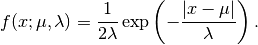
The first law of Laplace, from 1774, states that the frequency of an error can be expressed as an exponential function of the absolute magnitude of the error, which leads to the Laplace distribution. For many problems in economics and health sciences, this distribution seems to model the data better than the standard Gaussian distribution.
References
[1] Abramowitz, M. and Stegun, I. A. (Eds.). “Handbook of Mathematical Functions with Formulas, Graphs, and Mathematical Tables, 9th printing,” New York: Dover, 1972. [2] Kotz, Samuel, et. al. “The Laplace Distribution and Generalizations, ” Birkhauser, 2001. [3] Weisstein, Eric W. “Laplace Distribution.” From MathWorld–A Wolfram Web Resource. http://mathworld.wolfram.com/LaplaceDistribution.html [4] Wikipedia, “Laplace distribution”, http://en.wikipedia.org/wiki/Laplace_distribution Examples
Draw samples from the distribution
>>> loc, scale = 0., 1. >>> s = np.random.laplace(loc, scale, 1000)
Display the histogram of the samples, along with the probability density function:
>>> import matplotlib.pyplot as plt >>> count, bins, ignored = plt.hist(s, 30, normed=True) >>> x = np.arange(-8., 8., .01) >>> pdf = np.exp(-abs(x-loc)/scale)/(2.*scale) >>> plt.plot(x, pdf)
Plot Gaussian for comparison:
>>> g = (1/(scale * np.sqrt(2 * np.pi)) * ... np.exp(-(x - loc)**2 / (2 * scale**2))) >>> plt.plot(x,g)
- loc (float or array_like of floats, optional) – The position,
-
fcn_utils.evaluation.logistic(loc=0.0, scale=1.0, size=None)¶ Draw samples from a logistic distribution.
Samples are drawn from a logistic distribution with specified parameters, loc (location or mean, also median), and scale (>0).
Parameters: - loc (float or array_like of floats, optional) – Parameter of the distribution. Default is 0.
- scale (float or array_like of floats, optional) – Parameter of the distribution. Should be greater than zero. Default is 1.
- size (int or tuple of ints, optional) – Output shape. If the given shape is, e.g.,
(m, n, k), thenm * n * ksamples are drawn. If size isNone(default), a single value is returned iflocandscaleare both scalars. Otherwise,np.broadcast(loc, scale).sizesamples are drawn.
Returns: out – Drawn samples from the parameterized logistic distribution.
Return type: ndarray or scalar
See also
scipy.stats.logistic()- probability density function, distribution or cumulative density function, etc.
Notes
The probability density for the Logistic distribution is
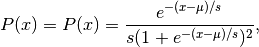
where
= location and  = scale.
= scale.The Logistic distribution is used in Extreme Value problems where it can act as a mixture of Gumbel distributions, in Epidemiology, and by the World Chess Federation (FIDE) where it is used in the Elo ranking system, assuming the performance of each player is a logistically distributed random variable.
References
[1] Reiss, R.-D. and Thomas M. (2001), “Statistical Analysis of Extreme Values, from Insurance, Finance, Hydrology and Other Fields,” Birkhauser Verlag, Basel, pp 132-133. [2] Weisstein, Eric W. “Logistic Distribution.” From MathWorld–A Wolfram Web Resource. http://mathworld.wolfram.com/LogisticDistribution.html [3] Wikipedia, “Logistic-distribution”, http://en.wikipedia.org/wiki/Logistic_distribution Examples
Draw samples from the distribution:
>>> loc, scale = 10, 1 >>> s = np.random.logistic(loc, scale, 10000) >>> count, bins, ignored = plt.hist(s, bins=50)
# plot against distribution
>>> def logist(x, loc, scale): ... return exp((loc-x)/scale)/(scale*(1+exp((loc-x)/scale))**2) >>> plt.plot(bins, logist(bins, loc, scale)*count.max()/\ ... logist(bins, loc, scale).max()) >>> plt.show()
-
fcn_utils.evaluation.lognormal(mean=0.0, sigma=1.0, size=None)¶ Draw samples from a log-normal distribution.
Draw samples from a log-normal distribution with specified mean, standard deviation, and array shape. Note that the mean and standard deviation are not the values for the distribution itself, but of the underlying normal distribution it is derived from.
Parameters: - mean (float or array_like of floats, optional) – Mean value of the underlying normal distribution. Default is 0.
- sigma (float or array_like of floats, optional) – Standard deviation of the underlying normal distribution. Should be greater than zero. Default is 1.
- size (int or tuple of ints, optional) – Output shape. If the given shape is, e.g.,
(m, n, k), thenm * n * ksamples are drawn. If size isNone(default), a single value is returned ifmeanandsigmaare both scalars. Otherwise,np.broadcast(mean, sigma).sizesamples are drawn.
Returns: out – Drawn samples from the parameterized log-normal distribution.
Return type: ndarray or scalar
See also
scipy.stats.lognorm()- probability density function, distribution, cumulative density function, etc.
Notes
A variable x has a log-normal distribution if log(x) is normally distributed. The probability density function for the log-normal distribution is:
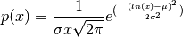
where
is the mean and  is the standard
deviation of the normally distributed logarithm of the variable.
A log-normal distribution results if a random variable is the product
of a large number of independent, identically-distributed variables in
the same way that a normal distribution results if the variable is the
sum of a large number of independent, identically-distributed
variables.
is the standard
deviation of the normally distributed logarithm of the variable.
A log-normal distribution results if a random variable is the product
of a large number of independent, identically-distributed variables in
the same way that a normal distribution results if the variable is the
sum of a large number of independent, identically-distributed
variables.References
[1] Limpert, E., Stahel, W. A., and Abbt, M., “Log-normal Distributions across the Sciences: Keys and Clues,” BioScience, Vol. 51, No. 5, May, 2001. http://stat.ethz.ch/~stahel/lognormal/bioscience.pdf [2] Reiss, R.D. and Thomas, M., “Statistical Analysis of Extreme Values,” Basel: Birkhauser Verlag, 2001, pp. 31-32. Examples
Draw samples from the distribution:
>>> mu, sigma = 3., 1. # mean and standard deviation >>> s = np.random.lognormal(mu, sigma, 1000)
Display the histogram of the samples, along with the probability density function:
>>> import matplotlib.pyplot as plt >>> count, bins, ignored = plt.hist(s, 100, normed=True, align='mid')
>>> x = np.linspace(min(bins), max(bins), 10000) >>> pdf = (np.exp(-(np.log(x) - mu)**2 / (2 * sigma**2)) ... / (x * sigma * np.sqrt(2 * np.pi)))
>>> plt.plot(x, pdf, linewidth=2, color='r') >>> plt.axis('tight') >>> plt.show()
Demonstrate that taking the products of random samples from a uniform distribution can be fit well by a log-normal probability density function.
>>> # Generate a thousand samples: each is the product of 100 random >>> # values, drawn from a normal distribution. >>> b = [] >>> for i in range(1000): ... a = 10. + np.random.random(100) ... b.append(np.product(a))
>>> b = np.array(b) / np.min(b) # scale values to be positive >>> count, bins, ignored = plt.hist(b, 100, normed=True, align='mid') >>> sigma = np.std(np.log(b)) >>> mu = np.mean(np.log(b))
>>> x = np.linspace(min(bins), max(bins), 10000) >>> pdf = (np.exp(-(np.log(x) - mu)**2 / (2 * sigma**2)) ... / (x * sigma * np.sqrt(2 * np.pi)))
>>> plt.plot(x, pdf, color='r', linewidth=2) >>> plt.show()
-
fcn_utils.evaluation.logseries(p, size=None)¶ Draw samples from a logarithmic series distribution.
Samples are drawn from a log series distribution with specified shape parameter, 0 <
p< 1.Parameters: - p (float or array_like of floats) – Shape parameter for the distribution. Must be in the range (0, 1).
- size (int or tuple of ints, optional) – Output shape. If the given shape is, e.g.,
(m, n, k), thenm * n * ksamples are drawn. If size isNone(default), a single value is returned ifpis a scalar. Otherwise,np.array(p).sizesamples are drawn.
Returns: out – Drawn samples from the parameterized logarithmic series distribution.
Return type: ndarray or scalar
See also
scipy.stats.logser()- probability density function, distribution or cumulative density function, etc.
Notes
The probability density for the Log Series distribution is
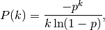
where p = probability.
The log series distribution is frequently used to represent species richness and occurrence, first proposed by Fisher, Corbet, and Williams in 1943 [2]. It may also be used to model the numbers of occupants seen in cars [3].
References
[1] Buzas, Martin A.; Culver, Stephen J., Understanding regional species diversity through the log series distribution of occurrences: BIODIVERSITY RESEARCH Diversity & Distributions, Volume 5, Number 5, September 1999 , pp. 187-195(9). [2] Fisher, R.A,, A.S. Corbet, and C.B. Williams. 1943. The relation between the number of species and the number of individuals in a random sample of an animal population. Journal of Animal Ecology, 12:42-58. [3] D. J. Hand, F. Daly, D. Lunn, E. Ostrowski, A Handbook of Small Data Sets, CRC Press, 1994. [4] Wikipedia, “Logarithmic distribution”, http://en.wikipedia.org/wiki/Logarithmic_distribution Examples
Draw samples from the distribution:
>>> a = .6 >>> s = np.random.logseries(a, 10000) >>> count, bins, ignored = plt.hist(s)
# plot against distribution
>>> def logseries(k, p): ... return -p**k/(k*log(1-p)) >>> plt.plot(bins, logseries(bins, a)*count.max()/ logseries(bins, a).max(), 'r') >>> plt.show()
-
fcn_utils.evaluation.multinomial(n, pvals, size=None)¶ Draw samples from a multinomial distribution.
The multinomial distribution is a multivariate generalisation of the binomial distribution. Take an experiment with one of
ppossible outcomes. An example of such an experiment is throwing a dice, where the outcome can be 1 through 6. Each sample drawn from the distribution represents n such experiments. Its values,X_i = [X_0, X_1, ..., X_p], represent the number of times the outcome wasi.Parameters: - n (int) – Number of experiments.
- pvals (sequence of floats, length p) – Probabilities of each of the
pdifferent outcomes. These should sum to 1 (however, the last element is always assumed to account for the remaining probability, as long assum(pvals[:-1]) <= 1). - size (int or tuple of ints, optional) – Output shape. If the given shape is, e.g.,
(m, n, k), thenm * n * ksamples are drawn. Default is None, in which case a single value is returned.
Returns: out – The drawn samples, of shape size, if that was provided. If not, the shape is
(N,).In other words, each entry
out[i,j,...,:]is an N-dimensional value drawn from the distribution.Return type: ndarray
Examples
Throw a dice 20 times:
>>> np.random.multinomial(20, [1/6.]*6, size=1) array([[4, 1, 7, 5, 2, 1]])
It landed 4 times on 1, once on 2, etc.
Now, throw the dice 20 times, and 20 times again:
>>> np.random.multinomial(20, [1/6.]*6, size=2) array([[3, 4, 3, 3, 4, 3], [2, 4, 3, 4, 0, 7]])
For the first run, we threw 3 times 1, 4 times 2, etc. For the second, we threw 2 times 1, 4 times 2, etc.
A loaded die is more likely to land on number 6:
>>> np.random.multinomial(100, [1/7.]*5 + [2/7.]) array([11, 16, 14, 17, 16, 26])
The probability inputs should be normalized. As an implementation detail, the value of the last entry is ignored and assumed to take up any leftover probability mass, but this should not be relied on. A biased coin which has twice as much weight on one side as on the other should be sampled like so:
>>> np.random.multinomial(100, [1.0 / 3, 2.0 / 3]) # RIGHT array([38, 62])
not like:
>>> np.random.multinomial(100, [1.0, 2.0]) # WRONG array([100, 0])
-
fcn_utils.evaluation.multivariate_normal(mean, cov[, size, check_valid, tol])¶ Draw random samples from a multivariate normal distribution.
The multivariate normal, multinormal or Gaussian distribution is a generalization of the one-dimensional normal distribution to higher dimensions. Such a distribution is specified by its mean and covariance matrix. These parameters are analogous to the mean (average or “center”) and variance (standard deviation, or “width,” squared) of the one-dimensional normal distribution.
Parameters: - mean (1-D array_like, of length N) – Mean of the N-dimensional distribution.
- cov (2-D array_like, of shape (N, N)) – Covariance matrix of the distribution. It must be symmetric and positive-semidefinite for proper sampling.
- size (int or tuple of ints, optional) – Given a shape of, for example,
(m,n,k),m*n*ksamples are generated, and packed in an m-by-n-by-k arrangement. Because each sample is N-dimensional, the output shape is(m,n,k,N). If no shape is specified, a single (N-D) sample is returned. - check_valid ({ 'warn', 'raise', 'ignore' }, optional) – Behavior when the covariance matrix is not positive semidefinite.
- tol (float, optional) – Tolerance when checking the singular values in covariance matrix.
Returns: out – The drawn samples, of shape size, if that was provided. If not, the shape is
(N,).In other words, each entry
out[i,j,...,:]is an N-dimensional value drawn from the distribution.Return type: ndarray
Notes
The mean is a coordinate in N-dimensional space, which represents the location where samples are most likely to be generated. This is analogous to the peak of the bell curve for the one-dimensional or univariate normal distribution.
Covariance indicates the level to which two variables vary together. From the multivariate normal distribution, we draw N-dimensional samples, 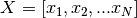. The covariance matrix element
 is the covariance of
is the covariance of  and
and  .
The element 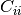 is the variance of (i.e. its
“spread”).
.
The element 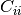 is the variance of (i.e. its
“spread”).Instead of specifying the full covariance matrix, popular approximations include:
- Spherical covariance (cov is a multiple of the identity matrix)
- Diagonal covariance (cov has non-negative elements, and only on the diagonal)
This geometrical property can be seen in two dimensions by plotting generated data-points:
>>> mean = [0, 0] >>> cov = [[1, 0], [0, 100]] # diagonal covariance
Diagonal covariance means that points are oriented along x or y-axis:
>>> import matplotlib.pyplot as plt >>> x, y = np.random.multivariate_normal(mean, cov, 5000).T >>> plt.plot(x, y, 'x') >>> plt.axis('equal') >>> plt.show()
Note that the covariance matrix must be positive semidefinite (a.k.a. nonnegative-definite). Otherwise, the behavior of this method is undefined and backwards compatibility is not guaranteed.
References
[1] Papoulis, A., “Probability, Random Variables, and Stochastic Processes,” 3rd ed., New York: McGraw-Hill, 1991. [2] Duda, R. O., Hart, P. E., and Stork, D. G., “Pattern Classification,” 2nd ed., New York: Wiley, 2001. Examples
>>> mean = (1, 2) >>> cov = [[1, 0], [0, 1]] >>> x = np.random.multivariate_normal(mean, cov, (3, 3)) >>> x.shape (3, 3, 2)
The following is probably true, given that 0.6 is roughly twice the standard deviation:
>>> list((x[0,0,:] - mean) < 0.6) [True, True]
-
fcn_utils.evaluation.negative_binomial(n, p, size=None)¶ Draw samples from a negative binomial distribution.
Samples are drawn from a negative binomial distribution with specified parameters, n trials and p probability of success where n is an integer > 0 and p is in the interval [0, 1].
Parameters: - n (int or array_like of ints) – Parameter of the distribution, > 0. Floats are also accepted, but they will be truncated to integers.
- p (float or array_like of floats) – Parameter of the distribution, >= 0 and <=1.
- size (int or tuple of ints, optional) – Output shape. If the given shape is, e.g.,
(m, n, k), thenm * n * ksamples are drawn. If size isNone(default), a single value is returned ifnandpare both scalars. Otherwise,np.broadcast(n, p).sizesamples are drawn.
Returns: out – Drawn samples from the parameterized negative binomial distribution, where each sample is equal to N, the number of trials it took to achieve n - 1 successes, N - (n - 1) failures, and a success on the, (N + n)th trial.
Return type: ndarray or scalar
Notes
The probability density for the negative binomial distribution is
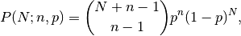
where
 is the number of successes, is the
probability of success, and 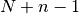 is the number of trials.
The negative binomial distribution gives the probability of n-1
successes and N failures in N+n-1 trials, and success on the (N+n)th
trial.
is the number of successes, is the
probability of success, and 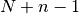 is the number of trials.
The negative binomial distribution gives the probability of n-1
successes and N failures in N+n-1 trials, and success on the (N+n)th
trial.If one throws a die repeatedly until the third time a “1” appears, then the probability distribution of the number of non-“1”s that appear before the third “1” is a negative binomial distribution.
References
[1] Weisstein, Eric W. “Negative Binomial Distribution.” From MathWorld–A Wolfram Web Resource. http://mathworld.wolfram.com/NegativeBinomialDistribution.html [2] Wikipedia, “Negative binomial distribution”, http://en.wikipedia.org/wiki/Negative_binomial_distribution Examples
Draw samples from the distribution:
A real world example. A company drills wild-cat oil exploration wells, each with an estimated probability of success of 0.1. What is the probability of having one success for each successive well, that is what is the probability of a single success after drilling 5 wells, after 6 wells, etc.?
>>> s = np.random.negative_binomial(1, 0.1, 100000) >>> for i in range(1, 11): ... probability = sum(s<i) / 100000. ... print i, "wells drilled, probability of one success =", probability
-
fcn_utils.evaluation.noncentral_chisquare(df, nonc, size=None)¶ Draw samples from a noncentral chi-square distribution.
The noncentral
 distribution is a generalisation of
the distribution.
distribution is a generalisation of
the distribution.Parameters: - df (int or array_like of ints) – Degrees of freedom, should be > 0 as of NumPy 1.10.0, should be > 1 for earlier versions.
- nonc (float or array_like of floats) – Non-centrality, should be non-negative.
- size (int or tuple of ints, optional) – Output shape. If the given shape is, e.g.,
(m, n, k), thenm * n * ksamples are drawn. If size isNone(default), a single value is returned ifdfandnoncare both scalars. Otherwise,np.broadcast(df, nonc).sizesamples are drawn.
Returns: out – Drawn samples from the parameterized noncentral chi-square distribution.
Return type: ndarray or scalar
Notes
The probability density function for the noncentral Chi-square distribution is
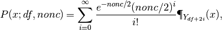
where 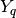 is the Chi-square with q degrees of freedom.
In Delhi (2007), it is noted that the noncentral chi-square is useful in bombing and coverage problems, the probability of killing the point target given by the noncentral chi-squared distribution.
References
[1] Delhi, M.S. Holla, “On a noncentral chi-square distribution in the analysis of weapon systems effectiveness”, Metrika, Volume 15, Number 1 / December, 1970. [2] Wikipedia, “Noncentral chi-square distribution” http://en.wikipedia.org/wiki/Noncentral_chi-square_distribution Examples
Draw values from the distribution and plot the histogram
>>> import matplotlib.pyplot as plt >>> values = plt.hist(np.random.noncentral_chisquare(3, 20, 100000), ... bins=200, normed=True) >>> plt.show()
Draw values from a noncentral chisquare with very small noncentrality, and compare to a chisquare.
>>> plt.figure() >>> values = plt.hist(np.random.noncentral_chisquare(3, .0000001, 100000), ... bins=np.arange(0., 25, .1), normed=True) >>> values2 = plt.hist(np.random.chisquare(3, 100000), ... bins=np.arange(0., 25, .1), normed=True) >>> plt.plot(values[1][0:-1], values[0]-values2[0], 'ob') >>> plt.show()
Demonstrate how large values of non-centrality lead to a more symmetric distribution.
>>> plt.figure() >>> values = plt.hist(np.random.noncentral_chisquare(3, 20, 100000), ... bins=200, normed=True) >>> plt.show()
-
fcn_utils.evaluation.noncentral_f(dfnum, dfden, nonc, size=None)¶ Draw samples from the noncentral F distribution.
Samples are drawn from an F distribution with specified parameters, dfnum (degrees of freedom in numerator) and dfden (degrees of freedom in denominator), where both parameters > 1. nonc is the non-centrality parameter.
Parameters: - dfnum (int or array_like of ints) – Parameter, should be > 1.
- dfden (int or array_like of ints) – Parameter, should be > 1.
- nonc (float or array_like of floats) – Parameter, should be >= 0.
- size (int or tuple of ints, optional) – Output shape. If the given shape is, e.g.,
(m, n, k), thenm * n * ksamples are drawn. If size isNone(default), a single value is returned ifdfnum,dfden, andnoncare all scalars. Otherwise,np.broadcast(dfnum, dfden, nonc).sizesamples are drawn.
Returns: out – Drawn samples from the parameterized noncentral Fisher distribution.
Return type: ndarray or scalar
Notes
When calculating the power of an experiment (power = probability of rejecting the null hypothesis when a specific alternative is true) the non-central F statistic becomes important. When the null hypothesis is true, the F statistic follows a central F distribution. When the null hypothesis is not true, then it follows a non-central F statistic.
References
[1] Weisstein, Eric W. “Noncentral F-Distribution.” From MathWorld–A Wolfram Web Resource. http://mathworld.wolfram.com/NoncentralF-Distribution.html [2] Wikipedia, “Noncentral F-distribution”, http://en.wikipedia.org/wiki/Noncentral_F-distribution Examples
In a study, testing for a specific alternative to the null hypothesis requires use of the Noncentral F distribution. We need to calculate the area in the tail of the distribution that exceeds the value of the F distribution for the null hypothesis. We’ll plot the two probability distributions for comparison.
>>> dfnum = 3 # between group deg of freedom >>> dfden = 20 # within groups degrees of freedom >>> nonc = 3.0 >>> nc_vals = np.random.noncentral_f(dfnum, dfden, nonc, 1000000) >>> NF = np.histogram(nc_vals, bins=50, normed=True) >>> c_vals = np.random.f(dfnum, dfden, 1000000) >>> F = np.histogram(c_vals, bins=50, normed=True) >>> plt.plot(F[1][1:], F[0]) >>> plt.plot(NF[1][1:], NF[0]) >>> plt.show()
-
fcn_utils.evaluation.normal(loc=0.0, scale=1.0, size=None)¶ Draw random samples from a normal (Gaussian) distribution.
The probability density function of the normal distribution, first derived by De Moivre and 200 years later by both Gauss and Laplace independently [2]_, is often called the bell curve because of its characteristic shape (see the example below).
The normal distributions occurs often in nature. For example, it describes the commonly occurring distribution of samples influenced by a large number of tiny, random disturbances, each with its own unique distribution [2]_.
Parameters: - loc (float or array_like of floats) – Mean (“centre”) of the distribution.
- scale (float or array_like of floats) – Standard deviation (spread or “width”) of the distribution.
- size (int or tuple of ints, optional) – Output shape. If the given shape is, e.g.,
(m, n, k), thenm * n * ksamples are drawn. If size isNone(default), a single value is returned iflocandscaleare both scalars. Otherwise,np.broadcast(loc, scale).sizesamples are drawn.
Returns: out – Drawn samples from the parameterized normal distribution.
Return type: ndarray or scalar
See also
scipy.stats.norm()- probability density function, distribution or cumulative density function, etc.
Notes
The probability density for the Gaussian distribution is
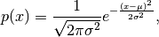
where
is the mean and the standard
deviation. The square of the standard deviation,  ,
is called the variance.
,
is called the variance.The function has its peak at the mean, and its “spread” increases with the standard deviation (the function reaches 0.607 times its maximum at 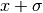 and 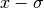 [2]_). This implies that numpy.random.normal is more likely to return samples lying close to the mean, rather than those far away.
References
[1] Wikipedia, “Normal distribution”, http://en.wikipedia.org/wiki/Normal_distribution [2] P. R. Peebles Jr., “Central Limit Theorem” in “Probability, Random Variables and Random Signal Principles”, 4th ed., 2001, pp. 51, 51, 125. Examples
Draw samples from the distribution:
>>> mu, sigma = 0, 0.1 # mean and standard deviation >>> s = np.random.normal(mu, sigma, 1000)
Verify the mean and the variance:
>>> abs(mu - np.mean(s)) < 0.01 True
>>> abs(sigma - np.std(s, ddof=1)) < 0.01 True
Display the histogram of the samples, along with the probability density function:
>>> import matplotlib.pyplot as plt >>> count, bins, ignored = plt.hist(s, 30, normed=True) >>> plt.plot(bins, 1/(sigma * np.sqrt(2 * np.pi)) * ... np.exp( - (bins - mu)**2 / (2 * sigma**2) ), ... linewidth=2, color='r') >>> plt.show()
-
fcn_utils.evaluation.pareto(a, size=None)¶ Draw samples from a Pareto II or Lomax distribution with specified shape.
The Lomax or Pareto II distribution is a shifted Pareto distribution. The classical Pareto distribution can be obtained from the Lomax distribution by adding 1 and multiplying by the scale parameter
m(see Notes). The smallest value of the Lomax distribution is zero while for the classical Pareto distribution it ismu, where the standard Pareto distribution has locationmu = 1. Lomax can also be considered as a simplified version of the Generalized Pareto distribution (available in SciPy), with the scale set to one and the location set to zero.The Pareto distribution must be greater than zero, and is unbounded above. It is also known as the “80-20 rule”. In this distribution, 80 percent of the weights are in the lowest 20 percent of the range, while the other 20 percent fill the remaining 80 percent of the range.
Parameters: - a (float or array_like of floats) – Shape of the distribution. Should be greater than zero.
- size (int or tuple of ints, optional) – Output shape. If the given shape is, e.g.,
(m, n, k), thenm * n * ksamples are drawn. If size isNone(default), a single value is returned ifais a scalar. Otherwise,np.array(a).sizesamples are drawn.
Returns: out – Drawn samples from the parameterized Pareto distribution.
Return type: ndarray or scalar
See also
scipy.stats.lomax()- probability density function, distribution or cumulative density function, etc.
scipy.stats.genpareto()- probability density function, distribution or cumulative density function, etc.
Notes
The probability density for the Pareto distribution is
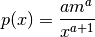
where
 is the shape and
is the shape and  the scale.
the scale.The Pareto distribution, named after the Italian economist Vilfredo Pareto, is a power law probability distribution useful in many real world problems. Outside the field of economics it is generally referred to as the Bradford distribution. Pareto developed the distribution to describe the distribution of wealth in an economy. It has also found use in insurance, web page access statistics, oil field sizes, and many other problems, including the download frequency for projects in Sourceforge [1]_. It is one of the so-called “fat-tailed” distributions.
References
[1] Francis Hunt and Paul Johnson, On the Pareto Distribution of Sourceforge projects. [2] Pareto, V. (1896). Course of Political Economy. Lausanne. [3] Reiss, R.D., Thomas, M.(2001), Statistical Analysis of Extreme Values, Birkhauser Verlag, Basel, pp 23-30. [4] Wikipedia, “Pareto distribution”, http://en.wikipedia.org/wiki/Pareto_distribution Examples
Draw samples from the distribution:
>>> a, m = 3., 2. # shape and mode >>> s = (np.random.pareto(a, 1000) + 1) * m
Display the histogram of the samples, along with the probability density function:
>>> import matplotlib.pyplot as plt >>> count, bins, _ = plt.hist(s, 100, normed=True) >>> fit = a*m**a / bins**(a+1) >>> plt.plot(bins, max(count)*fit/max(fit), linewidth=2, color='r') >>> plt.show()
-
fcn_utils.evaluation.permutation(x)¶ Randomly permute a sequence, or return a permuted range.
If x is a multi-dimensional array, it is only shuffled along its first index.
Parameters: x (int or array_like) – If x is an integer, randomly permute np.arange(x). If x is an array, make a copy and shuffle the elements randomly.Returns: out – Permuted sequence or array range. Return type: ndarray Examples
>>> np.random.permutation(10) array([1, 7, 4, 3, 0, 9, 2, 5, 8, 6])
>>> np.random.permutation([1, 4, 9, 12, 15]) array([15, 1, 9, 4, 12])
>>> arr = np.arange(9).reshape((3, 3)) >>> np.random.permutation(arr) array([[6, 7, 8], [0, 1, 2], [3, 4, 5]])
-
fcn_utils.evaluation.poisson(lam=1.0, size=None)¶ Draw samples from a Poisson distribution.
The Poisson distribution is the limit of the binomial distribution for large N.
Parameters: - lam (float or array_like of floats) – Expectation of interval, should be >= 0. A sequence of expectation intervals must be broadcastable over the requested size.
- size (int or tuple of ints, optional) – Output shape. If the given shape is, e.g.,
(m, n, k), thenm * n * ksamples are drawn. If size isNone(default), a single value is returned iflamis a scalar. Otherwise,np.array(lam).sizesamples are drawn.
Returns: out – Drawn samples from the parameterized Poisson distribution.
Return type: ndarray or scalar
Notes
The Poisson distribution
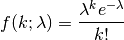
For events with an expected separation
the Poisson
distribution 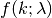 describes the probability of
events occurring within the observed
interval .Because the output is limited to the range of the C long type, a ValueError is raised when lam is within 10 sigma of the maximum representable value.
References
[1] Weisstein, Eric W. “Poisson Distribution.” From MathWorld–A Wolfram Web Resource. http://mathworld.wolfram.com/PoissonDistribution.html [2] Wikipedia, “Poisson distribution”, http://en.wikipedia.org/wiki/Poisson_distribution Examples
Draw samples from the distribution:
>>> import numpy as np >>> s = np.random.poisson(5, 10000)
Display histogram of the sample:
>>> import matplotlib.pyplot as plt >>> count, bins, ignored = plt.hist(s, 14, normed=True) >>> plt.show()
Draw each 100 values for lambda 100 and 500:
>>> s = np.random.poisson(lam=(100., 500.), size=(100, 2))
-
fcn_utils.evaluation.power(a, size=None)¶ Draws samples in [0, 1] from a power distribution with positive exponent a - 1.
Also known as the power function distribution.
Parameters: - a (float or array_like of floats) – Parameter of the distribution. Should be greater than zero.
- size (int or tuple of ints, optional) – Output shape. If the given shape is, e.g.,
(m, n, k), thenm * n * ksamples are drawn. If size isNone(default), a single value is returned ifais a scalar. Otherwise,np.array(a).sizesamples are drawn.
Returns: out – Drawn samples from the parameterized power distribution.
Return type: ndarray or scalar
Raises: ValueError– If a < 1.Notes
The probability density function is
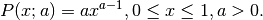
The power function distribution is just the inverse of the Pareto distribution. It may also be seen as a special case of the Beta distribution.
It is used, for example, in modeling the over-reporting of insurance claims.
References
[1] Christian Kleiber, Samuel Kotz, “Statistical size distributions in economics and actuarial sciences”, Wiley, 2003. [2] Heckert, N. A. and Filliben, James J. “NIST Handbook 148: Dataplot Reference Manual, Volume 2: Let Subcommands and Library Functions”, National Institute of Standards and Technology Handbook Series, June 2003. http://www.itl.nist.gov/div898/software/dataplot/refman2/auxillar/powpdf.pdf Examples
Draw samples from the distribution:
>>> a = 5. # shape >>> samples = 1000 >>> s = np.random.power(a, samples)
Display the histogram of the samples, along with the probability density function:
>>> import matplotlib.pyplot as plt >>> count, bins, ignored = plt.hist(s, bins=30) >>> x = np.linspace(0, 1, 100) >>> y = a*x**(a-1.) >>> normed_y = samples*np.diff(bins)[0]*y >>> plt.plot(x, normed_y) >>> plt.show()
Compare the power function distribution to the inverse of the Pareto.
>>> from scipy import stats >>> rvs = np.random.power(5, 1000000) >>> rvsp = np.random.pareto(5, 1000000) >>> xx = np.linspace(0,1,100) >>> powpdf = stats.powerlaw.pdf(xx,5)
>>> plt.figure() >>> plt.hist(rvs, bins=50, normed=True) >>> plt.plot(xx,powpdf,'r-') >>> plt.title('np.random.power(5)')
>>> plt.figure() >>> plt.hist(1./(1.+rvsp), bins=50, normed=True) >>> plt.plot(xx,powpdf,'r-') >>> plt.title('inverse of 1 + np.random.pareto(5)')
>>> plt.figure() >>> plt.hist(1./(1.+rvsp), bins=50, normed=True) >>> plt.plot(xx,powpdf,'r-') >>> plt.title('inverse of stats.pareto(5)')
-
fcn_utils.evaluation.rand(d0, d1, ..., dn)¶ Random values in a given shape.
Create an array of the given shape and populate it with random samples from a uniform distribution over
[0, 1).Parameters: d1, .., dn (d0,) – The dimensions of the returned array, should all be positive. If no argument is given a single Python float is returned. Returns: out – Random values. Return type: ndarray, shape (d0, d1, ..., dn)See also
Notes
This is a convenience function. If you want an interface that takes a shape-tuple as the first argument, refer to np.random.random_sample .
Examples
>>> np.random.rand(3,2) array([[ 0.14022471, 0.96360618], #random [ 0.37601032, 0.25528411], #random [ 0.49313049, 0.94909878]]) #random
-
fcn_utils.evaluation.randint(low, high=None, size=None, dtype='l')¶ Return random integers from low (inclusive) to high (exclusive).
Return random integers from the “discrete uniform” distribution of the specified dtype in the “half-open” interval [low, high). If high is None (the default), then results are from [0, low).
Parameters: - low (int) – Lowest (signed) integer to be drawn from the distribution (unless
high=None, in which case this parameter is one above the highest such integer). - high (int, optional) – If provided, one above the largest (signed) integer to be drawn
from the distribution (see above for behavior if
high=None). - size (int or tuple of ints, optional) – Output shape. If the given shape is, e.g.,
(m, n, k), thenm * n * ksamples are drawn. Default is None, in which case a single value is returned. - dtype (dtype, optional) –
Desired dtype of the result. All dtypes are determined by their name, i.e., ‘int64’, ‘int’, etc, so byteorder is not available and a specific precision may have different C types depending on the platform. The default value is ‘np.int’.
New in version 1.11.0.
Returns: out – size-shaped array of random integers from the appropriate distribution, or a single such random int if size not provided.
Return type: int or ndarray of ints
See also
random.random_integers()- similar to randint, only for the closed interval [low, high], and 1 is the lowest value if high is omitted. In particular, this other one is the one to use to generate uniformly distributed discrete non-integers.
Examples
>>> np.random.randint(2, size=10) array([1, 0, 0, 0, 1, 1, 0, 0, 1, 0]) >>> np.random.randint(1, size=10) array([0, 0, 0, 0, 0, 0, 0, 0, 0, 0])
Generate a 2 x 4 array of ints between 0 and 4, inclusive:
>>> np.random.randint(5, size=(2, 4)) array([[4, 0, 2, 1], [3, 2, 2, 0]])
- low (int) – Lowest (signed) integer to be drawn from the distribution (unless
-
fcn_utils.evaluation.randn(d0, d1, ..., dn)¶ Return a sample (or samples) from the “standard normal” distribution.
If positive, int_like or int-convertible arguments are provided, randn generates an array of shape
(d0, d1, ..., dn), filled with random floats sampled from a univariate “normal” (Gaussian) distribution of mean 0 and variance 1 (if any of the are
floats, they are first converted to integers by truncation). A single
float randomly sampled from the distribution is returned if no
argument is provided.
are
floats, they are first converted to integers by truncation). A single
float randomly sampled from the distribution is returned if no
argument is provided.This is a convenience function. If you want an interface that takes a tuple as the first argument, use numpy.random.standard_normal instead.
Parameters: d1, .., dn (d0,) – The dimensions of the returned array, should be all positive. If no argument is given a single Python float is returned. Returns: Z – A (d0, d1, ..., dn)-shaped array of floating-point samples from the standard normal distribution, or a single such float if no parameters were supplied.Return type: ndarray or float See also
random.standard_normal()- Similar, but takes a tuple as its argument.
Notes
For random samples from 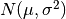, use:
sigma * np.random.randn(...) + muExamples
>>> np.random.randn() 2.1923875335537315 #random
Two-by-four array of samples from N(3, 6.25):
>>> 2.5 * np.random.randn(2, 4) + 3 array([[-4.49401501, 4.00950034, -1.81814867, 7.29718677], #random [ 0.39924804, 4.68456316, 4.99394529, 4.84057254]]) #random
-
fcn_utils.evaluation.random()¶ random_sample(size=None)
Return random floats in the half-open interval [0.0, 1.0).
Results are from the “continuous uniform” distribution over the stated interval. To sample 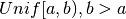 multiply the output of random_sample by (b-a) and add a:
(b - a) * random_sample() + a
Parameters: size (int or tuple of ints, optional) – Output shape. If the given shape is, e.g., (m, n, k), thenm * n * ksamples are drawn. Default is None, in which case a single value is returned.Returns: out – Array of random floats of shape size (unless size=None, in which case a single float is returned).Return type: float or ndarray of floats Examples
>>> np.random.random_sample() 0.47108547995356098 >>> type(np.random.random_sample()) <type 'float'> >>> np.random.random_sample((5,)) array([ 0.30220482, 0.86820401, 0.1654503 , 0.11659149, 0.54323428])
Three-by-two array of random numbers from [-5, 0):
>>> 5 * np.random.random_sample((3, 2)) - 5 array([[-3.99149989, -0.52338984], [-2.99091858, -0.79479508], [-1.23204345, -1.75224494]])
-
fcn_utils.evaluation.random_integers(low, high=None, size=None)¶ Random integers of type np.int between low and high, inclusive.
Return random integers of type np.int from the “discrete uniform” distribution in the closed interval [low, high]. If high is None (the default), then results are from [1, low]. The np.int type translates to the C long type used by Python 2 for “short” integers and its precision is platform dependent.
This function has been deprecated. Use randint instead.
Deprecated since version 1.11.0.
Parameters: - low (int) – Lowest (signed) integer to be drawn from the distribution (unless
high=None, in which case this parameter is the highest such integer). - high (int, optional) – If provided, the largest (signed) integer to be drawn from the
distribution (see above for behavior if
high=None). - size (int or tuple of ints, optional) – Output shape. If the given shape is, e.g.,
(m, n, k), thenm * n * ksamples are drawn. Default is None, in which case a single value is returned.
Returns: out – size-shaped array of random integers from the appropriate distribution, or a single such random int if size not provided.
Return type: int or ndarray of ints
See also
random.randint()- Similar to random_integers, only for the half-open interval [low, high), and 0 is the lowest value if high is omitted.
Notes
To sample from N evenly spaced floating-point numbers between a and b, use:
a + (b - a) * (np.random.random_integers(N) - 1) / (N - 1.)
Examples
>>> np.random.random_integers(5) 4 >>> type(np.random.random_integers(5)) <type 'int'> >>> np.random.random_integers(5, size=(3,2)) array([[5, 4], [3, 3], [4, 5]])
Choose five random numbers from the set of five evenly-spaced numbers between 0 and 2.5, inclusive (i.e., from the set 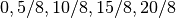):
>>> 2.5 * (np.random.random_integers(5, size=(5,)) - 1) / 4. array([ 0.625, 1.25 , 0.625, 0.625, 2.5 ])
Roll two six sided dice 1000 times and sum the results:
>>> d1 = np.random.random_integers(1, 6, 1000) >>> d2 = np.random.random_integers(1, 6, 1000) >>> dsums = d1 + d2
Display results as a histogram:
>>> import matplotlib.pyplot as plt >>> count, bins, ignored = plt.hist(dsums, 11, normed=True) >>> plt.show()
- low (int) – Lowest (signed) integer to be drawn from the distribution (unless
-
fcn_utils.evaluation.random_sample(size=None)¶ Return random floats in the half-open interval [0.0, 1.0).
Results are from the “continuous uniform” distribution over the stated interval. To sample multiply the output of random_sample by (b-a) and add a:
(b - a) * random_sample() + a
Parameters: size (int or tuple of ints, optional) – Output shape. If the given shape is, e.g., (m, n, k), thenm * n * ksamples are drawn. Default is None, in which case a single value is returned.Returns: out – Array of random floats of shape size (unless size=None, in which case a single float is returned).Return type: float or ndarray of floats Examples
>>> np.random.random_sample() 0.47108547995356098 >>> type(np.random.random_sample()) <type 'float'> >>> np.random.random_sample((5,)) array([ 0.30220482, 0.86820401, 0.1654503 , 0.11659149, 0.54323428])
Three-by-two array of random numbers from [-5, 0):
>>> 5 * np.random.random_sample((3, 2)) - 5 array([[-3.99149989, -0.52338984], [-2.99091858, -0.79479508], [-1.23204345, -1.75224494]])
-
fcn_utils.evaluation.ranf()¶ random_sample(size=None)
Return random floats in the half-open interval [0.0, 1.0).
Results are from the “continuous uniform” distribution over the stated interval. To sample multiply the output of random_sample by (b-a) and add a:
(b - a) * random_sample() + a
Parameters: size (int or tuple of ints, optional) – Output shape. If the given shape is, e.g., (m, n, k), thenm * n * ksamples are drawn. Default is None, in which case a single value is returned.Returns: out – Array of random floats of shape size (unless size=None, in which case a single float is returned).Return type: float or ndarray of floats Examples
>>> np.random.random_sample() 0.47108547995356098 >>> type(np.random.random_sample()) <type 'float'> >>> np.random.random_sample((5,)) array([ 0.30220482, 0.86820401, 0.1654503 , 0.11659149, 0.54323428])
Three-by-two array of random numbers from [-5, 0):
>>> 5 * np.random.random_sample((3, 2)) - 5 array([[-3.99149989, -0.52338984], [-2.99091858, -0.79479508], [-1.23204345, -1.75224494]])
-
fcn_utils.evaluation.rayleigh(scale=1.0, size=None)¶ Draw samples from a Rayleigh distribution.
The
 and Weibull distributions are generalizations of the
Rayleigh.
and Weibull distributions are generalizations of the
Rayleigh.Parameters: - scale (float or array_like of floats, optional) – Scale, also equals the mode. Should be >= 0. Default is 1.
- size (int or tuple of ints, optional) – Output shape. If the given shape is, e.g.,
(m, n, k), thenm * n * ksamples are drawn. If size isNone(default), a single value is returned ifscaleis a scalar. Otherwise,np.array(scale).sizesamples are drawn.
Returns: out – Drawn samples from the parameterized Rayleigh distribution.
Return type: ndarray or scalar
Notes
The probability density function for the Rayleigh distribution is
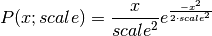
The Rayleigh distribution would arise, for example, if the East and North components of the wind velocity had identical zero-mean Gaussian distributions. Then the wind speed would have a Rayleigh distribution.
References
[1] Brighton Webs Ltd., “Rayleigh Distribution,” http://www.brighton-webs.co.uk/distributions/rayleigh.asp [2] Wikipedia, “Rayleigh distribution” http://en.wikipedia.org/wiki/Rayleigh_distribution Examples
Draw values from the distribution and plot the histogram
>>> values = hist(np.random.rayleigh(3, 100000), bins=200, normed=True)
Wave heights tend to follow a Rayleigh distribution. If the mean wave height is 1 meter, what fraction of waves are likely to be larger than 3 meters?
>>> meanvalue = 1 >>> modevalue = np.sqrt(2 / np.pi) * meanvalue >>> s = np.random.rayleigh(modevalue, 1000000)
The percentage of waves larger than 3 meters is:
>>> 100.*sum(s>3)/1000000. 0.087300000000000003
-
fcn_utils.evaluation.sample()¶ random_sample(size=None)
Return random floats in the half-open interval [0.0, 1.0).
Results are from the “continuous uniform” distribution over the stated interval. To sample multiply the output of random_sample by (b-a) and add a:
(b - a) * random_sample() + a
Parameters: size (int or tuple of ints, optional) – Output shape. If the given shape is, e.g., (m, n, k), thenm * n * ksamples are drawn. Default is None, in which case a single value is returned.Returns: out – Array of random floats of shape size (unless size=None, in which case a single float is returned).Return type: float or ndarray of floats Examples
>>> np.random.random_sample() 0.47108547995356098 >>> type(np.random.random_sample()) <type 'float'> >>> np.random.random_sample((5,)) array([ 0.30220482, 0.86820401, 0.1654503 , 0.11659149, 0.54323428])
Three-by-two array of random numbers from [-5, 0):
>>> 5 * np.random.random_sample((3, 2)) - 5 array([[-3.99149989, -0.52338984], [-2.99091858, -0.79479508], [-1.23204345, -1.75224494]])
-
fcn_utils.evaluation.seed(seed=None)¶ Seed the generator.
This method is called when RandomState is initialized. It can be called again to re-seed the generator. For details, see RandomState.
Parameters: seed (int or array_like, optional) – Seed for RandomState. Must be convertible to 32 bit unsigned integers. See also
RandomState()
-
fcn_utils.evaluation.set_state(state)¶ Set the internal state of the generator from a tuple.
For use if one has reason to manually (re-)set the internal state of the “Mersenne Twister”[1]_ pseudo-random number generating algorithm.
Parameters: state (tuple(str, ndarray of 624 uints, int, int, float)) – The state tuple has the following items:
- the string ‘MT19937’, specifying the Mersenne Twister algorithm.
- a 1-D array of 624 unsigned integers
keys. - an integer
pos. - an integer
has_gauss. - a float
cached_gaussian.
Returns: out – Returns ‘None’ on success. Return type: None See also
Notes
set_state and get_state are not needed to work with any of the random distributions in NumPy. If the internal state is manually altered, the user should know exactly what he/she is doing.
For backwards compatibility, the form (str, array of 624 uints, int) is also accepted although it is missing some information about the cached Gaussian value:
state = ('MT19937', keys, pos).References
[1] M. Matsumoto and T. Nishimura, “Mersenne Twister: A 623-dimensionally equidistributed uniform pseudorandom number generator,” ACM Trans. on Modeling and Computer Simulation, Vol. 8, No. 1, pp. 3-30, Jan. 1998.
-
fcn_utils.evaluation.shuffle(x)¶ Modify a sequence in-place by shuffling its contents.
This function only shuffles the array along the first axis of a multi-dimensional array. The order of sub-arrays is changed but their contents remains the same.
Parameters: x (array_like) – The array or list to be shuffled. Returns: Return type: None Examples
>>> arr = np.arange(10) >>> np.random.shuffle(arr) >>> arr [1 7 5 2 9 4 3 6 0 8]
Multi-dimensional arrays are only shuffled along the first axis:
>>> arr = np.arange(9).reshape((3, 3)) >>> np.random.shuffle(arr) >>> arr array([[3, 4, 5], [6, 7, 8], [0, 1, 2]])
-
fcn_utils.evaluation.standard_cauchy(size=None)¶ Draw samples from a standard Cauchy distribution with mode = 0.
Also known as the Lorentz distribution.
Parameters: size (int or tuple of ints, optional) – Output shape. If the given shape is, e.g., (m, n, k), thenm * n * ksamples are drawn. Default is None, in which case a single value is returned.Returns: samples – The drawn samples. Return type: ndarray or scalar Notes
The probability density function for the full Cauchy distribution is
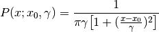
and the Standard Cauchy distribution just sets
 and
and

The Cauchy distribution arises in the solution to the driven harmonic oscillator problem, and also describes spectral line broadening. It also describes the distribution of values at which a line tilted at a random angle will cut the x axis.
When studying hypothesis tests that assume normality, seeing how the tests perform on data from a Cauchy distribution is a good indicator of their sensitivity to a heavy-tailed distribution, since the Cauchy looks very much like a Gaussian distribution, but with heavier tails.
References
[1] NIST/SEMATECH e-Handbook of Statistical Methods, “Cauchy Distribution”, http://www.itl.nist.gov/div898/handbook/eda/section3/eda3663.htm [2] Weisstein, Eric W. “Cauchy Distribution.” From MathWorld–A Wolfram Web Resource. http://mathworld.wolfram.com/CauchyDistribution.html [3] Wikipedia, “Cauchy distribution” http://en.wikipedia.org/wiki/Cauchy_distribution Examples
Draw samples and plot the distribution:
>>> s = np.random.standard_cauchy(1000000) >>> s = s[(s>-25) & (s<25)] # truncate distribution so it plots well >>> plt.hist(s, bins=100) >>> plt.show()
-
fcn_utils.evaluation.standard_exponential(size=None)¶ Draw samples from the standard exponential distribution.
standard_exponential is identical to the exponential distribution with a scale parameter of 1.
Parameters: size (int or tuple of ints, optional) – Output shape. If the given shape is, e.g., (m, n, k), thenm * n * ksamples are drawn. Default is None, in which case a single value is returned.Returns: out – Drawn samples. Return type: float or ndarray Examples
Output a 3x8000 array:
>>> n = np.random.standard_exponential((3, 8000))
-
fcn_utils.evaluation.standard_gamma(shape, size=None)¶ Draw samples from a standard Gamma distribution.
Samples are drawn from a Gamma distribution with specified parameters, shape (sometimes designated “k”) and scale=1.
Parameters: - shape (float or array_like of floats) – Parameter, should be > 0.
- size (int or tuple of ints, optional) – Output shape. If the given shape is, e.g.,
(m, n, k), thenm * n * ksamples are drawn. If size isNone(default), a single value is returned ifshapeis a scalar. Otherwise,np.array(shape).sizesamples are drawn.
Returns: out – Drawn samples from the parameterized standard gamma distribution.
Return type: ndarray or scalar
See also
scipy.stats.gamma()- probability density function, distribution or cumulative density function, etc.
Notes
The probability density for the Gamma distribution is
where
is the shape and the scale,
and is the Gamma function.The Gamma distribution is often used to model the times to failure of electronic components, and arises naturally in processes for which the waiting times between Poisson distributed events are relevant.
References
[1] Weisstein, Eric W. “Gamma Distribution.” From MathWorld–A Wolfram Web Resource. http://mathworld.wolfram.com/GammaDistribution.html [2] Wikipedia, “Gamma distribution”, http://en.wikipedia.org/wiki/Gamma_distribution Examples
Draw samples from the distribution:
>>> shape, scale = 2., 1. # mean and width >>> s = np.random.standard_gamma(shape, 1000000)
Display the histogram of the samples, along with the probability density function:
>>> import matplotlib.pyplot as plt >>> import scipy.special as sps >>> count, bins, ignored = plt.hist(s, 50, normed=True) >>> y = bins**(shape-1) * ((np.exp(-bins/scale))/ \ ... (sps.gamma(shape) * scale**shape)) >>> plt.plot(bins, y, linewidth=2, color='r') >>> plt.show()
-
fcn_utils.evaluation.standard_normal(size=None)¶ Draw samples from a standard Normal distribution (mean=0, stdev=1).
Parameters: size (int or tuple of ints, optional) – Output shape. If the given shape is, e.g., (m, n, k), thenm * n * ksamples are drawn. Default is None, in which case a single value is returned.Returns: out – Drawn samples. Return type: float or ndarray Examples
>>> s = np.random.standard_normal(8000) >>> s array([ 0.6888893 , 0.78096262, -0.89086505, ..., 0.49876311, #random -0.38672696, -0.4685006 ]) #random >>> s.shape (8000,) >>> s = np.random.standard_normal(size=(3, 4, 2)) >>> s.shape (3, 4, 2)
-
fcn_utils.evaluation.standard_t(df, size=None)¶ Draw samples from a standard Student’s t distribution with df degrees of freedom.
A special case of the hyperbolic distribution. As df gets large, the result resembles that of the standard normal distribution (standard_normal).
Parameters: - df (int or array_like of ints) – Degrees of freedom, should be > 0.
- size (int or tuple of ints, optional) – Output shape. If the given shape is, e.g.,
(m, n, k), thenm * n * ksamples are drawn. If size isNone(default), a single value is returned ifdfis a scalar. Otherwise,np.array(df).sizesamples are drawn.
Returns: out – Drawn samples from the parameterized standard Student’s t distribution.
Return type: ndarray or scalar
Notes
The probability density function for the t distribution is
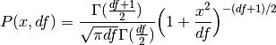
The t test is based on an assumption that the data come from a Normal distribution. The t test provides a way to test whether the sample mean (that is the mean calculated from the data) is a good estimate of the true mean.
The derivation of the t-distribution was first published in 1908 by William Gosset while working for the Guinness Brewery in Dublin. Due to proprietary issues, he had to publish under a pseudonym, and so he used the name Student.
References
[1] Dalgaard, Peter, “Introductory Statistics With R”, Springer, 2002. [2] Wikipedia, “Student’s t-distribution” http://en.wikipedia.org/wiki/Student’s_t-distribution Examples
From Dalgaard page 83 [1]_, suppose the daily energy intake for 11 women in Kj is:
>>> intake = np.array([5260., 5470, 5640, 6180, 6390, 6515, 6805, 7515, \ ... 7515, 8230, 8770])
Does their energy intake deviate systematically from the recommended value of 7725 kJ?
We have 10 degrees of freedom, so is the sample mean within 95% of the recommended value?
>>> s = np.random.standard_t(10, size=100000) >>> np.mean(intake) 6753.636363636364 >>> intake.std(ddof=1) 1142.1232221373727
Calculate the t statistic, setting the ddof parameter to the unbiased value so the divisor in the standard deviation will be degrees of freedom, N-1.
>>> t = (np.mean(intake)-7725)/(intake.std(ddof=1)/np.sqrt(len(intake))) >>> import matplotlib.pyplot as plt >>> h = plt.hist(s, bins=100, normed=True)
For a one-sided t-test, how far out in the distribution does the t statistic appear?
>>> np.sum(s<t) / float(len(s)) 0.0090699999999999999 #random
So the p-value is about 0.009, which says the null hypothesis has a probability of about 99% of being true.
-
fcn_utils.evaluation.triangular(left, mode, right, size=None)¶ Draw samples from the triangular distribution over the interval
[left, right].The triangular distribution is a continuous probability distribution with lower limit left, peak at mode, and upper limit right. Unlike the other distributions, these parameters directly define the shape of the pdf.
Parameters: - left (float or array_like of floats) – Lower limit.
- mode (float or array_like of floats) – The value where the peak of the distribution occurs.
The value should fulfill the condition
left <= mode <= right. - right (float or array_like of floats) – Upper limit, should be larger than left.
- size (int or tuple of ints, optional) – Output shape. If the given shape is, e.g.,
(m, n, k), thenm * n * ksamples are drawn. If size isNone(default), a single value is returned ifleft,mode, andrightare all scalars. Otherwise,np.broadcast(left, mode, right).sizesamples are drawn.
Returns: out – Drawn samples from the parameterized triangular distribution.
Return type: ndarray or scalar
Notes
The probability density function for the triangular distribution is
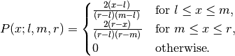
The triangular distribution is often used in ill-defined problems where the underlying distribution is not known, but some knowledge of the limits and mode exists. Often it is used in simulations.
References
[1] Wikipedia, “Triangular distribution” http://en.wikipedia.org/wiki/Triangular_distribution Examples
Draw values from the distribution and plot the histogram:
>>> import matplotlib.pyplot as plt >>> h = plt.hist(np.random.triangular(-3, 0, 8, 100000), bins=200, ... normed=True) >>> plt.show()
-
fcn_utils.evaluation.uniform(low=0.0, high=1.0, size=None)¶ Draw samples from a uniform distribution.
Samples are uniformly distributed over the half-open interval
[low, high)(includes low, but excludes high). In other words, any value within the given interval is equally likely to be drawn by uniform.Parameters: - low (float or array_like of floats, optional) – Lower boundary of the output interval. All values generated will be greater than or equal to low. The default value is 0.
- high (float or array_like of floats) – Upper boundary of the output interval. All values generated will be less than high. The default value is 1.0.
- size (int or tuple of ints, optional) – Output shape. If the given shape is, e.g.,
(m, n, k), thenm * n * ksamples are drawn. If size isNone(default), a single value is returned iflowandhighare both scalars. Otherwise,np.broadcast(low, high).sizesamples are drawn.
Returns: out – Drawn samples from the parameterized uniform distribution.
Return type: ndarray or scalar
See also
randint()- Discrete uniform distribution, yielding integers.
random_integers()- Discrete uniform distribution over the closed interval
[low, high]. random_sample()- Floats uniformly distributed over
[0, 1). random()- Alias for random_sample.
rand()- Convenience function that accepts dimensions as input, e.g.,
rand(2,2)would generate a 2-by-2 array of floats, uniformly distributed over[0, 1).
Notes
The probability density function of the uniform distribution is
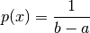
anywhere within the interval
[a, b), and zero elsewhere.When
high==low, values oflowwill be returned. Ifhigh<low, the results are officially undefined and may eventually raise an error, i.e. do not rely on this function to behave when passed arguments satisfying that inequality condition.Examples
Draw samples from the distribution:
>>> s = np.random.uniform(-1,0,1000)
All values are within the given interval:
>>> np.all(s >= -1) True >>> np.all(s < 0) True
Display the histogram of the samples, along with the probability density function:
>>> import matplotlib.pyplot as plt >>> count, bins, ignored = plt.hist(s, 15, normed=True) >>> plt.plot(bins, np.ones_like(bins), linewidth=2, color='r') >>> plt.show()
-
fcn_utils.evaluation.vonmises(mu, kappa, size=None)¶ Draw samples from a von Mises distribution.
Samples are drawn from a von Mises distribution with specified mode (mu) and dispersion (kappa), on the interval [-pi, pi].
The von Mises distribution (also known as the circular normal distribution) is a continuous probability distribution on the unit circle. It may be thought of as the circular analogue of the normal distribution.
Parameters: - mu (float or array_like of floats) – Mode (“center”) of the distribution.
- kappa (float or array_like of floats) – Dispersion of the distribution, has to be >=0.
- size (int or tuple of ints, optional) – Output shape. If the given shape is, e.g.,
(m, n, k), thenm * n * ksamples are drawn. If size isNone(default), a single value is returned ifmuandkappaare both scalars. Otherwise,np.broadcast(mu, kappa).sizesamples are drawn.
Returns: out – Drawn samples from the parameterized von Mises distribution.
Return type: ndarray or scalar
See also
scipy.stats.vonmises()- probability density function, distribution, or cumulative density function, etc.
Notes
The probability density for the von Mises distribution is
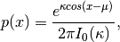
where
is the mode and  the dispersion,
and
the dispersion,
and  is the modified Bessel function of order 0.
is the modified Bessel function of order 0.The von Mises is named for Richard Edler von Mises, who was born in Austria-Hungary, in what is now the Ukraine. He fled to the United States in 1939 and became a professor at Harvard. He worked in probability theory, aerodynamics, fluid mechanics, and philosophy of science.
References
[1] Abramowitz, M. and Stegun, I. A. (Eds.). “Handbook of Mathematical Functions with Formulas, Graphs, and Mathematical Tables, 9th printing,” New York: Dover, 1972. [2] von Mises, R., “Mathematical Theory of Probability and Statistics”, New York: Academic Press, 1964. Examples
Draw samples from the distribution:
>>> mu, kappa = 0.0, 4.0 # mean and dispersion >>> s = np.random.vonmises(mu, kappa, 1000)
Display the histogram of the samples, along with the probability density function:
>>> import matplotlib.pyplot as plt >>> from scipy.special import i0 >>> plt.hist(s, 50, normed=True) >>> x = np.linspace(-np.pi, np.pi, num=51) >>> y = np.exp(kappa*np.cos(x-mu))/(2*np.pi*i0(kappa)) >>> plt.plot(x, y, linewidth=2, color='r') >>> plt.show()
-
fcn_utils.evaluation.wald(mean, scale, size=None)¶ Draw samples from a Wald, or inverse Gaussian, distribution.
As the scale approaches infinity, the distribution becomes more like a Gaussian. Some references claim that the Wald is an inverse Gaussian with mean equal to 1, but this is by no means universal.
The inverse Gaussian distribution was first studied in relationship to Brownian motion. In 1956 M.C.K. Tweedie used the name inverse Gaussian because there is an inverse relationship between the time to cover a unit distance and distance covered in unit time.
Parameters: - mean (float or array_like of floats) – Distribution mean, should be > 0.
- scale (float or array_like of floats) – Scale parameter, should be >= 0.
- size (int or tuple of ints, optional) – Output shape. If the given shape is, e.g.,
(m, n, k), thenm * n * ksamples are drawn. If size isNone(default), a single value is returned ifmeanandscaleare both scalars. Otherwise,np.broadcast(mean, scale).sizesamples are drawn.
Returns: out – Drawn samples from the parameterized Wald distribution.
Return type: ndarray or scalar
Notes
The probability density function for the Wald distribution is
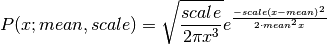
As noted above the inverse Gaussian distribution first arise from attempts to model Brownian motion. It is also a competitor to the Weibull for use in reliability modeling and modeling stock returns and interest rate processes.
References
[1] Brighton Webs Ltd., Wald Distribution, http://www.brighton-webs.co.uk/distributions/wald.asp [2] Chhikara, Raj S., and Folks, J. Leroy, “The Inverse Gaussian Distribution: Theory : Methodology, and Applications”, CRC Press, 1988. [3] Wikipedia, “Wald distribution” http://en.wikipedia.org/wiki/Wald_distribution Examples
Draw values from the distribution and plot the histogram:
>>> import matplotlib.pyplot as plt >>> h = plt.hist(np.random.wald(3, 2, 100000), bins=200, normed=True) >>> plt.show()
-
fcn_utils.evaluation.weibull(a, size=None)¶ Draw samples from a Weibull distribution.
Draw samples from a 1-parameter Weibull distribution with the given shape parameter a.
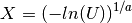
Here, U is drawn from the uniform distribution over (0,1].
The more common 2-parameter Weibull, including a scale parameter
is just 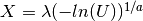.Parameters: - a (float or array_like of floats) – Shape of the distribution. Should be greater than zero.
- size (int or tuple of ints, optional) – Output shape. If the given shape is, e.g.,
(m, n, k), thenm * n * ksamples are drawn. If size isNone(default), a single value is returned ifais a scalar. Otherwise,np.array(a).sizesamples are drawn.
Returns: out – Drawn samples from the parameterized Weibull distribution.
Return type: ndarray or scalar
See also
scipy.stats.weibull_max(),scipy.stats.weibull_min(),scipy.stats.genextreme(),gumbel()Notes
The Weibull (or Type III asymptotic extreme value distribution for smallest values, SEV Type III, or Rosin-Rammler distribution) is one of a class of Generalized Extreme Value (GEV) distributions used in modeling extreme value problems. This class includes the Gumbel and Frechet distributions.
The probability density for the Weibull distribution is
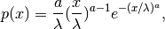
where
is the shape and the scale.The function has its peak (the mode) at 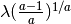.
When
a = 1, the Weibull distribution reduces to the exponential distribution.References
[1] Waloddi Weibull, Royal Technical University, Stockholm, 1939 “A Statistical Theory Of The Strength Of Materials”, Ingeniorsvetenskapsakademiens Handlingar Nr 151, 1939, Generalstabens Litografiska Anstalts Forlag, Stockholm. [2] Waloddi Weibull, “A Statistical Distribution Function of Wide Applicability”, Journal Of Applied Mechanics ASME Paper 1951. [3] Wikipedia, “Weibull distribution”, http://en.wikipedia.org/wiki/Weibull_distribution Examples
Draw samples from the distribution:
>>> a = 5. # shape >>> s = np.random.weibull(a, 1000)
Display the histogram of the samples, along with the probability density function:
>>> import matplotlib.pyplot as plt >>> x = np.arange(1,100.)/50. >>> def weib(x,n,a): ... return (a / n) * (x / n)**(a - 1) * np.exp(-(x / n)**a)
>>> count, bins, ignored = plt.hist(np.random.weibull(5.,1000)) >>> x = np.arange(1,100.)/50. >>> scale = count.max()/weib(x, 1., 5.).max() >>> plt.plot(x, weib(x, 1., 5.)*scale) >>> plt.show()
-
fcn_utils.evaluation.zipf(a, size=None)¶ Draw samples from a Zipf distribution.
Samples are drawn from a Zipf distribution with specified parameter a > 1.
The Zipf distribution (also known as the zeta distribution) is a continuous probability distribution that satisfies Zipf’s law: the frequency of an item is inversely proportional to its rank in a frequency table.
Parameters: - a (float or array_like of floats) – Distribution parameter. Should be greater than 1.
- size (int or tuple of ints, optional) – Output shape. If the given shape is, e.g.,
(m, n, k), thenm * n * ksamples are drawn. If size isNone(default), a single value is returned ifais a scalar. Otherwise,np.array(a).sizesamples are drawn.
Returns: out – Drawn samples from the parameterized Zipf distribution.
Return type: ndarray or scalar
See also
scipy.stats.zipf()- probability density function, distribution, or cumulative density function, etc.
Notes
The probability density for the Zipf distribution is
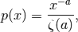
where is the Riemann Zeta function.
It is named for the American linguist George Kingsley Zipf, who noted that the frequency of any word in a sample of a language is inversely proportional to its rank in the frequency table.
References
[1] Zipf, G. K., “Selected Studies of the Principle of Relative Frequency in Language,” Cambridge, MA: Harvard Univ. Press, 1932. Examples
Draw samples from the distribution:
>>> a = 2. # parameter >>> s = np.random.zipf(a, 1000)
Display the histogram of the samples, along with the probability density function:
>>> import matplotlib.pyplot as plt >>> from scipy import special
Truncate s values at 50 so plot is interesting:
>>> count, bins, ignored = plt.hist(s[s<50], 50, normed=True) >>> x = np.arange(1., 50.) >>> y = x**(-a) / special.zetac(a) >>> plt.plot(x, y/max(y), linewidth=2, color='r') >>> plt.show()